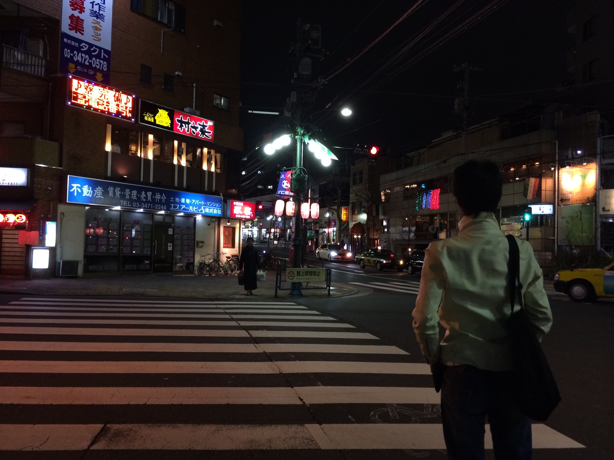
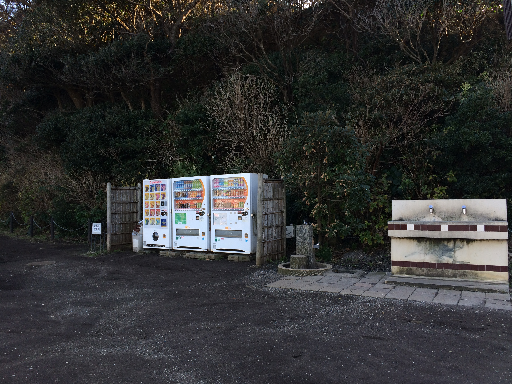
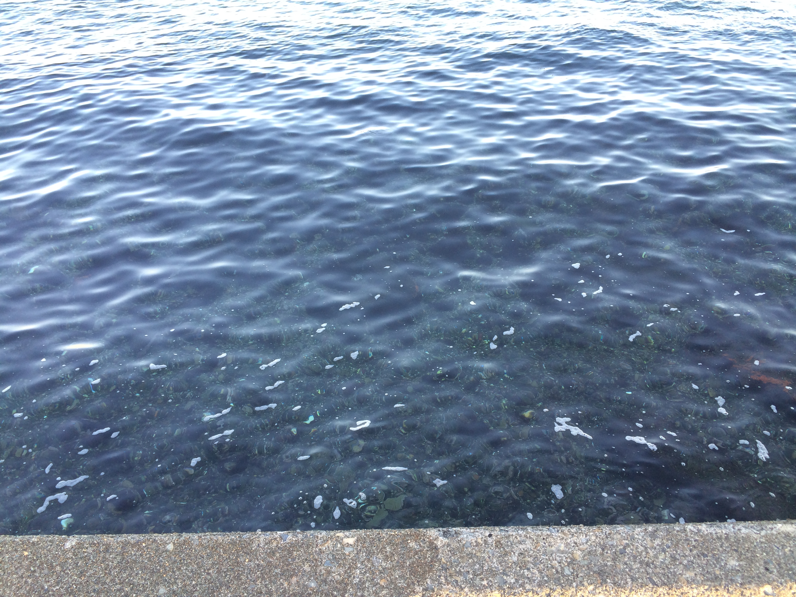
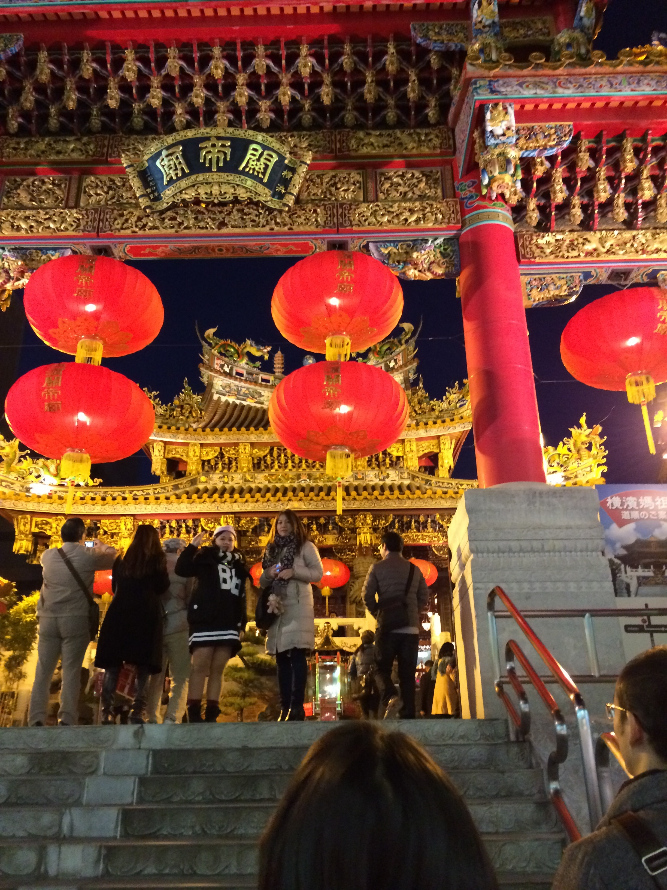
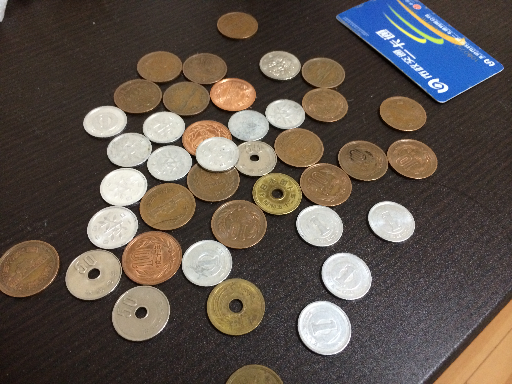
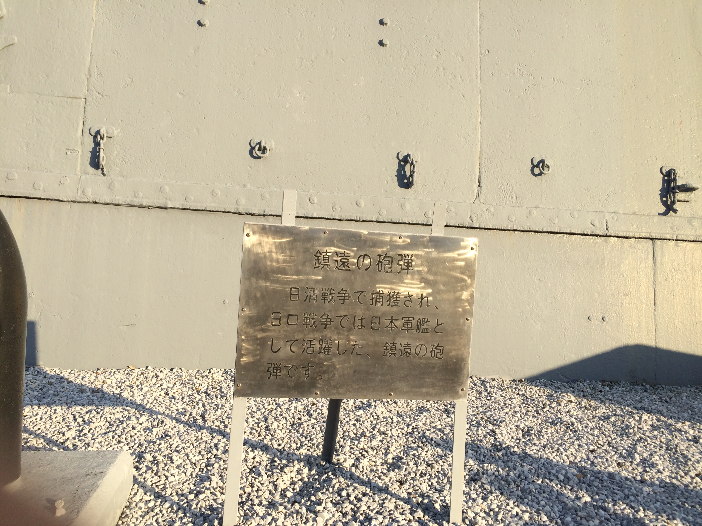
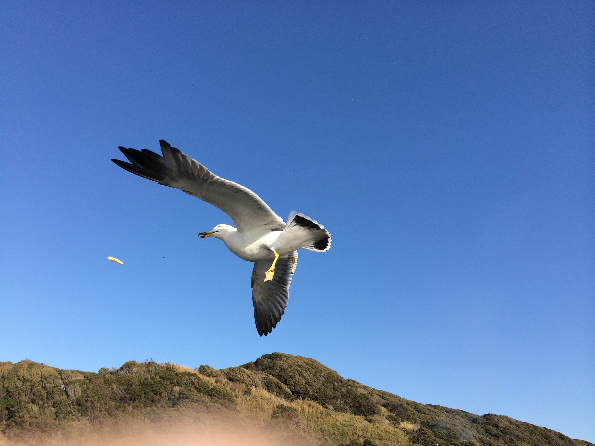
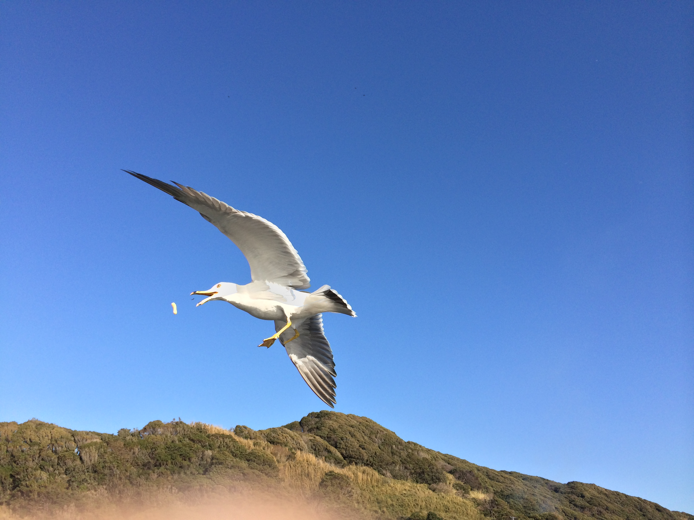

tokyo

到处都是自动贩卖机,我在这买饮料的时候，没有投币就按下了饮料的按钮，然后就传来逼真乌鸦的叫声。
我惊诧了一下，投了币，买了饮料。
然后传来一只很好听的其他的一种小鸟的叫声。我心想这贩卖机做的太屌了啊，有木有啊。
抬头一看，我靠，原来有一只真的乌鸦在树上面叫。

这里的海水特别清澈，可以清晰的看到海底的岩石

日本的关帝庙
上这个台阶的时候，台阶上有些水。有个女孩摔倒了，顺手抓住了我的领子，我喊了声：悲剧啊。

这些个树木好像是在了无人烟的犄角旮旯一样，我看着这首先想到的是，大概当年八国联军进入中国时跟我现在的心情一样。

坑爹的硬币

甲午中午战争
上面写的是日清战争，然后旁边是缴获的两枚炮弹.


有人在喂海鸥，还引来了好几只鹰，我随便拍了几张，结果不错。连食物都拍到了。